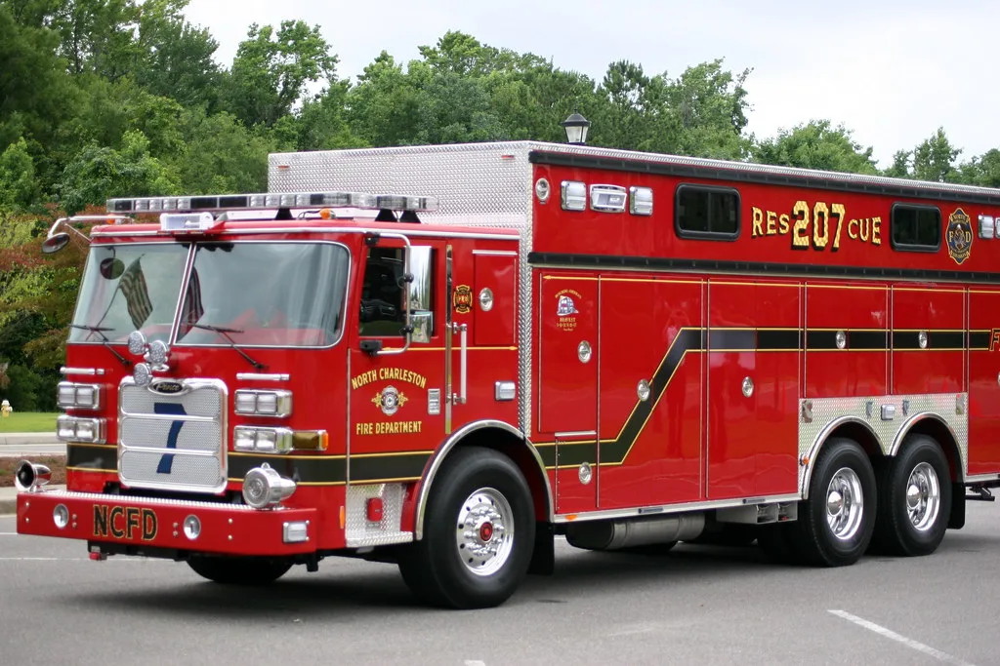
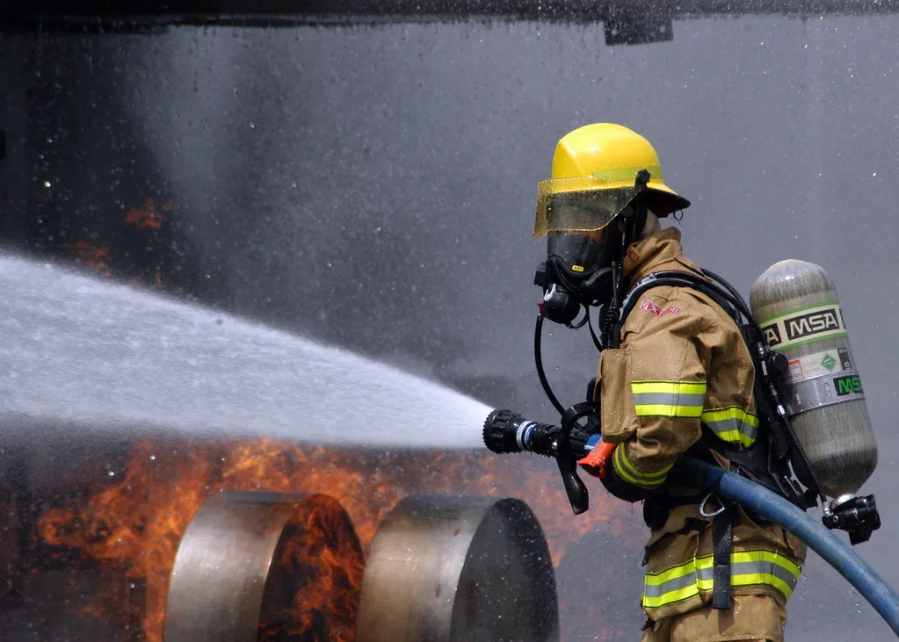

부천 공장화재 진압하던 40대 소방관 끝내 순직…이재명 대통령 "천금도 아깝지 않다"
경기 부천의 한 공장 화재를 진압하다 심정지 상태로 발견된 40대 소방관이 17일 오전 끝내 순직했다. 불은 전날인 16일 오전 8시 38분쯔음 부천시 오정구 내동의 한 금속 사출·인쇄공장에서 발생해 2시간 28분 만에 큰불이 잡혔다. 부천소방서 오정119안전센터 소속 이 소방대원은 선착대로 현장에 가장 먼저 도착해 진화 작업을 벌이던 중, 불길이 예상보다 급격히 번지면서 건물 내부에 고립됐다. 동료들이 뒤늦게 구조에 나섰지만 그는 이미 심정지 상태였고, 병원으로 옮겨져 치료를 받았으나 17일 0시 55분 숨을 거뒀다.
함께 초기에 건물 안으로 진입했던 다른 40대 소방대원 한 명도 큰 부상을 입고 현재 병원에서 치료를 받고 있다. 두 사람은 불이 급속히 확산되는 상황에서 인명 피해 여부를 확인하기 위해 내부로 진입했다가 고립된 것으로 소방당국은 파악하고 있다. 이 밖에도 진화 작업 중 열탈진 증상을 보인 소방관 4명이 추가로 병원으로 옮겨졌고, 공장 관계자 2명도 연기를 흡입해 치료를 받았다. 이번 화재로 인한 부상자는 소방관 5명을 포함해 모두 7명에 이른다.

소방당국은 해당 공장이 금속 제품을 사출하고 인쇄하는 공정을 함께 운영하는 곳이었던 만큼, 가연성 자재와 화학물질이 뒤섞여 있어 화재 초기 진압이 유독 까다로웠을 것으로 보고 있다. 실제로 신고 접수 후 큰불이 잡히기까지 2시간 넘게 걸렸고, 그 사이 내부 구조물이 급격히 무너지며 고립 상황이 벌어진 것으로 전해졌다. 소방 당국과 경찰은 17일 공장과 유관기관 관계자들이 참여하는 합동 감식을 벌여 정확한 발화 원인과 급속 확산 경위를 규명할 예정이다.
이재명 대통령은 화재 소식을 접한 뒤 관계 기관에 진화와 인명 구조에 최선을 다하라는 긴급 지시를 내렸다. 이 대통령은 16일 제주에서 열린 제107회 전국체육대회 개회식 축사에서 사경을 헤매는 소방관의 쾌유를 기원하며 "국민의 생명과 안전을 위해 자신의 목숨까지 걸고 헌신하는 이들에게 천금을 준들 아깝겠느냐"고 말했다. 이어 소방관에 대한 예우와 보상 체계가 그간 충분하지 못했던 것이 안타까운 현실이라고 언급하며, 순직·공상 소방공무원에 대한 지원 강화를 검토하겠다는 취지의 메시지를 내놓았다.

이번 순직을 계기로 현장 소방관들의 위험 수당과 보상 체계, 노후 설비 공장에 대한 화재 안전 점검 강화 필요성이 다시 도마 위에 오를 것으로 보인다. 소방 현장에서는 중소 규모 사출·인쇄 공장처럼 유증기와 가연성 자재가 많은 업종의 경우, 초기 신고와 스프링클러 등 소화 설비 미비가 대형 인명피해로 이어지는 경우가 적지 않다는 지적이 꾸준히 나온다. 관할 소방서와 고용노동부는 이번 사고를 계기로 유사 업종 사업장에 대한 안전 점검 확대 여부를 검토할 방침이다.
동료를 잃은 부천소방서는 장례 절차와 함께 순직 처리 등 관련 행정 지원에 나설 예정이며, 중상을 입은 소방관의 치료 경과에도 관심이 쏠리고 있다. 매년 반복되는 현장 소방관의 순직 사고를 두고, 단순한 애도를 넘어 실질적인 처우 개선과 안전장비 확충으로 이어져야 한다는 목소리가 다시 커지고 있다. 소방 당국은 이번 사고를 계기로 전국 소방서를 대상으로 노후 산업시설에 대한 사전 위험성 평가와 현장 지휘관의 철수 판단 기준을 다시 점검하겠다는 방침도 함께 내놓을 것으로 예상된다.